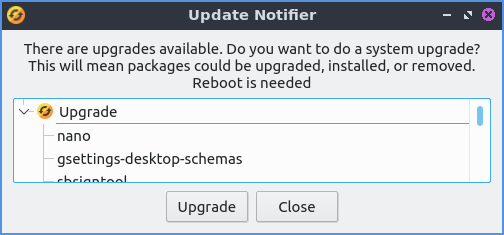

Chapter 4.4 Update Notifier¶
Update Notifier is a simple program to upgrade your system.
Usage¶
To apply an upgrade for the press the Upgrade button. This will bring up a prompt for Update Notifier with lxqt-sudo for you to authenticate applying updates. After this happens in the center will be a large progress bar showing the progress of installing. Press the OK button after entering your password. Once the update is done press the Close button.
To see what will change on a update left click on the a category most likely Upgrade and see what list of packages will be upgraded. If there are any security updates a second column will appear that says Security. Next to each security update a green shield will show up to denote that upgrade is a security upgrade. To see further what dependencies are pulling in the upgrade and to collapse them click the arrow next to the package to be upgraded and again to collapse the list.
If you have to restart after an update the window will say Restart Required.
Screenshot¶
Version¶
Denios-OS ships with version 0.4 of Update Notifier.
How to Launch¶
To launch Update Notifier , press the Apply Full Upgrade from LXQt Configuration Center, or from the command line run
denios-os-upgrader
The icon for Update Notifier looks like a yellow circle with two circular arrows above it.